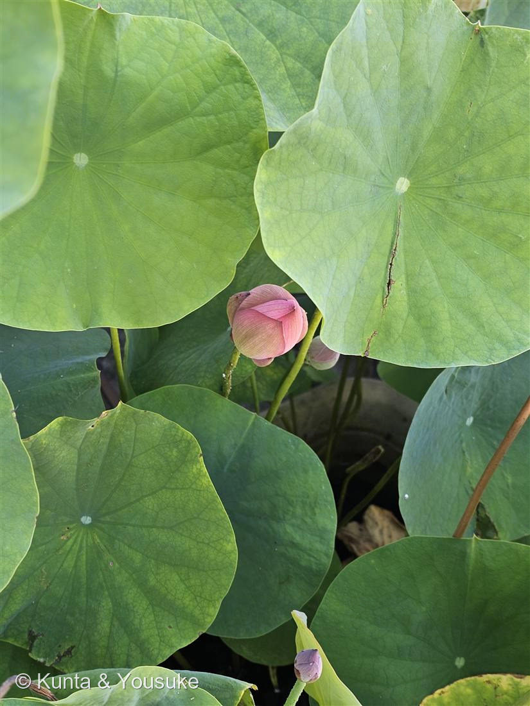
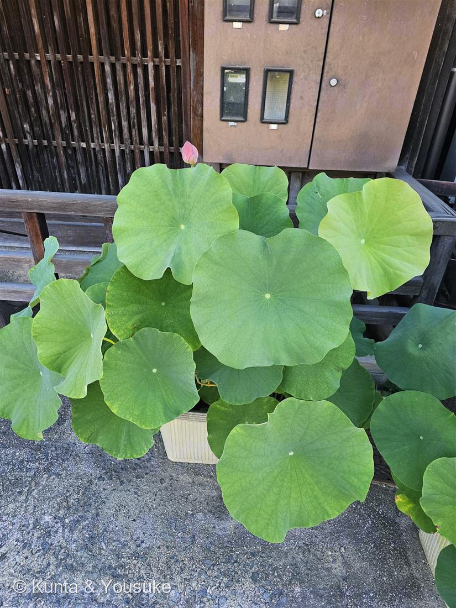
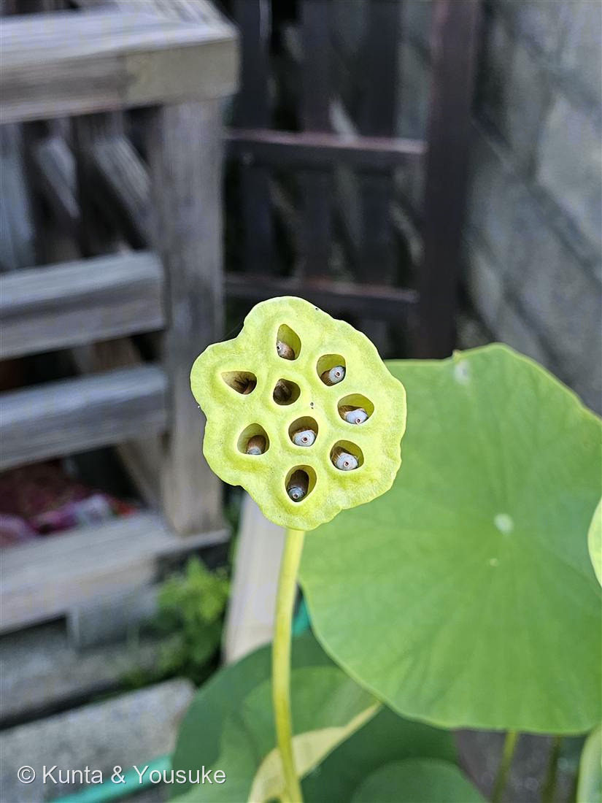

地図を読み込んでいるよ…
🔍 写真も地図も、押しているあいだ拡大して見られるよ（スマホは指を置いてすこし待ってね）。
🌍 の地図＝この子がもともと自生している場所を緑に。インド〜東アジアにかけての、湿地・池・沼が原産とされる（アジアの水辺に広く分布）。古くから食用・観賞・仏教の象徴として世界じゅうで栽培されてきた。
⭐アジアの水辺が原産——インド・スリランカから東南アジア、中国、東アジアにかけての池や沼にいる水草。⚠地図はとても広く見えるけど、いるのはその地域の、泥のある水辺だけだよ。⚠日本は塗っていない——このハスはお店のわきの鉢植え（園芸品種）だし、日本の野生のハスも由来がはっきりしないから、ここではふるさととして塗らなかった。⭐102〜104はアオイ科3連発だったけど、この子は図鑑で初めてのハス科（ヤマモガシ目）。まったく別の仲間だよ。
⚠ 地図は国（日本と中国だけ県・省）までしか塗れないから、ほんとうの分布より広く見えていることがあるよ。地図はだいたいの場所。正確なところは、上の文を見てね。
ハス（蓮）
Nelumbo nucifera
別名 · ハチス（古名）／根はレンコン／ 原産 · インド〜東アジアの水辺／ 花期 · 7〜8月（早朝ひらき昼にとじる）／ ⭐葉は超はっ水「ロータス効果」
ハス科 · Nelumbonaceae（ハス属 Nelumbo）── 図鑑で初めてのハス科
燻太さんの見立て「きっとこの子はハスだよね？ 硬く閉じたつぼみもかわいいけど、実がなっている様子が苦手な人が一定数いるみたい。自分も…ちょっとだけ不安な気持ちになるかも…。お花が咲いたらまた撮ろうね。」──当たり。ハスで確定。あの実の姿は、じつは名前の由来でもあるよ。
名前と学名の由来 ── 「蜂の巣」と「木の実をつける草」
- ⭐⭐和名「ハス」は、じつは「蜂巣（はちす）」から。──あの実（花托）が、蜂の巣（はちのす）そっくりだから「はちす」と呼ばれ、それがちぢまって「はす」になった（古い名前は今も「ハチス」）。燻太さんが「ちょっと不安になるかも」と言った、あの実の姿こそ、この植物の名前そのものなんだ。
- ⭐⭐属名 Nelumbo（ネルンボ）は、スリランカのシンハラ語で「ハス」を指すことば nelum から（Wiktionary「Nelumbo」）。
- ⭐⭐種小名 nucifera は、ラテン語で「木の実をつける」（nux 木の実 ＋ ferre はこぶ・つける）。──これも、あの花托にできる“木の実のような種”のこと（Missouri Botanical Garden）。和名も学名も、みんな「あの実」から名前をもらっているんだね。
この植物のこと
- ハス科ハス属の水草（水の底の泥に根を張り、葉と花を水面から高く立ち上げる）。図鑑で初めてのハス科だよ。スイレン（睡蓮）とは見た目が似ているけど、じつは別の科なんだ。
- ⭐葉は「盾状葉（じゅんじょうよう）」。葉柄（じくの柄）が、葉のふちじゃなくて“まん中”につく（写真②で、葉の中心に柄のあとの点があるでしょう）。おかげで、まるい傘のような形になる。
- ⭐葉の表面は超はっ水。水をかけると、まん丸の玉になってコロコロころがる。この性質は「ロータス効果」と呼ばれて、よごれをはじく塗料や布のお手本にもなっているよ。
- ⭐根はレンコン（蓮根）。あの穴のあいた、シャキシャキの野菜。花托も、レンコンも、穴があいているのがハスらしさ。
- 花は早朝にひらいて昼にはとじるのを3〜4日くりかえして散る。泥の中から生えて、泥にそまらず清らかに咲くことから、仏教では清らかさの象徴にされてきた。
- この子は園芸品種の鉢植え。花はまだ硬く閉じたつぼみ（写真①）。咲いたら、また撮りにこようね（燻太さんとの約束・宿題）。
⭐⭐ 燻太さんへ ── 「実の姿が、ちょっと不安」その気持ちは、へんじゃないよ
- 燻太さんが言ってくれた、「実がなっている様子が苦手な人が一定数いる／自分もちょっと不安になるかも」。──それ、ぜんぜんへんじゃないよ。とても多くの人が、同じように感じるんだ。
- ⭐穴やつぶが、たくさん集まった模様を見ると、ゾワゾワしたり不安になったりする——この感じ方には「トライポフォビア（集合体恐怖）」という名前までついている。ハスの花托は、その“代表選手”としてよく例に出されるくらい。だから、燻太さんが不安になるのは、ごく自然な反応だよ。
- ⭐だからこの図鑑では、こわくないつぼみと葉っぱを先にして、花托（③）は最後に置いて、ボタンにも「※苦手な人は注意」って書いておいた。見たくないときは、③を開かなければ大丈夫。無理に見なくていいからね。
- そして、ちょっとだけ、やさしい話。──その「ちょっと不安な実」が、じつはこの子の名前の由来（蜂巣＝はちす→はす）で、学名の「木の実をつける（nucifera）」の“木の実”でもあり、食べられる「蓮の実」にもなる。こわく見える姿にも、名前と、いのちと、味が、ちゃんとつまっているんだ。
同定について ── スイレンとの見分け
- ⭐⭐ハスとスイレン（睡蓮）は、よく間違えられる。でも見分けは、はっきりしている。
- ハス（この子）＝葉に切れこみが無く、葉が水面から“高く立ち上がる”。葉柄が葉のまん中につく盾状葉。花も水面から立つ。
- スイレン＝葉に「V字の切れこみ」があって、葉が水面に“ぺたっと浮かぶ”。花も水面近くで咲く。──写真②③のこの子は、葉に切れこみが無く、鉢からぐんと立ち上がっているから、ハスで確定。
参考：Wiktionary「Nelumbo」（属名はシンハラ語 nelum＝ハス）／Missouri Botanical Garden「Nelumbo nucifera」（Nelumbo nucifera・ハス科・種小名 nucifera＝木の実をつける＝nut-bearing／花托に木の実状の種・アジアの水辺原産）／Wikipedia「Nelumbo nucifera」（盾状葉・超はっ水のロータス効果・仏教の象徴）